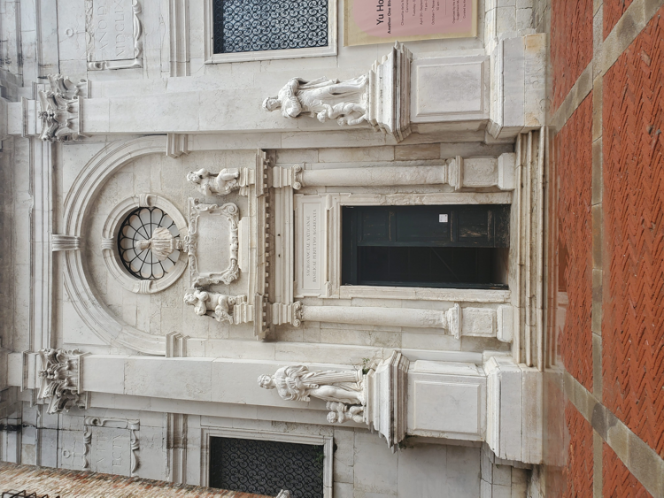
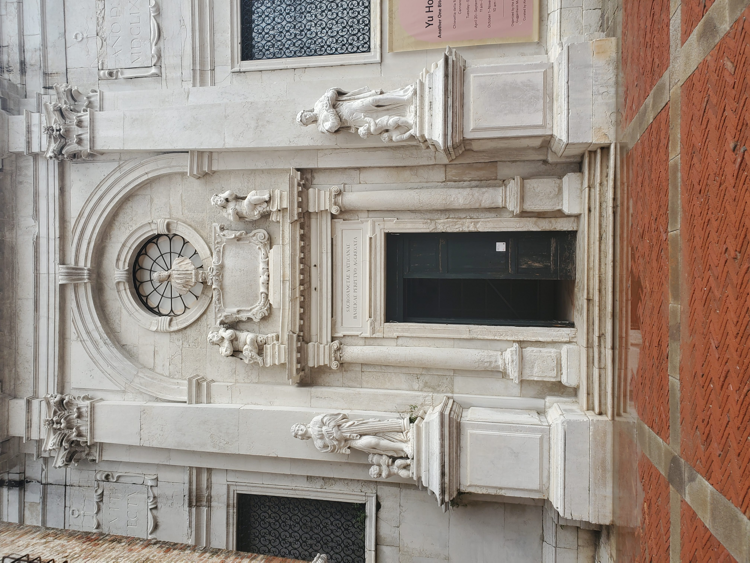
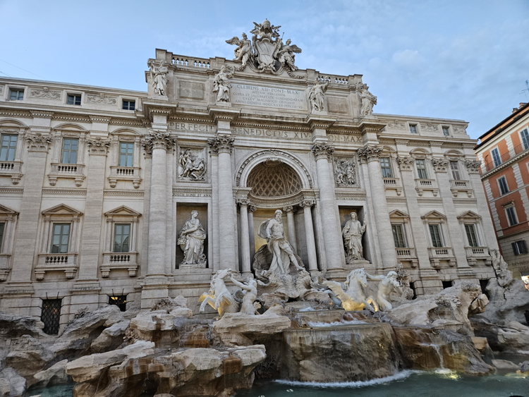
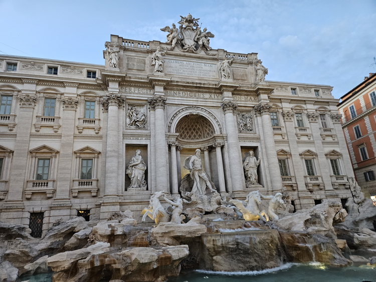
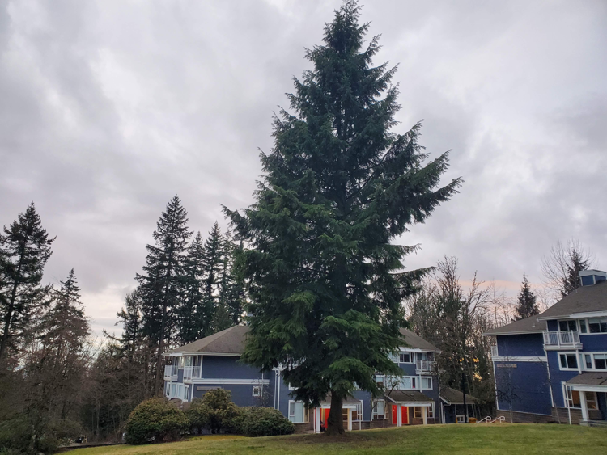
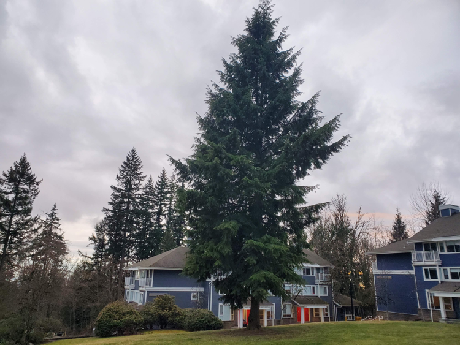

Name: Maelle McCallum
Student No: 301550046
Date: Feb 26, 2025
I have not cheated in any way when doing this assignment, I did it on my own. I may have asked questions about the assignment on Coursys, I know that’s totally fine and even encouraged. I also already know that this class is graded on a curve. I realize that if I cheat and by some miracle not get caught, any increase in my grade will in turn shift the curve and result in lower grades for my classmates. Any undeserved extra grade would come at the cost of all others. That’s horrible! I would never do it.


 

 



 



Computation time for FAST: 8.29s / 12 imgs = 0.69s per img on average
Computation time for FASTR: 7.68s / 12 imgs = 0.64s per img on average
The difference I observed between the average computation time of FAST and FASTR was negligible, with FASTR being only marginally faster.
I used SURF to generate feature descriptors.
The matching with FAST took 0.51s while the matching with FASTR took 0.26s, meaning the computations with FASTR were twice as fast.
The optimal RANSAC parameters for the FASTR set needed a far higher value for maximum number of trials (700) than the FAST set (50) in order to return satisfactory results.